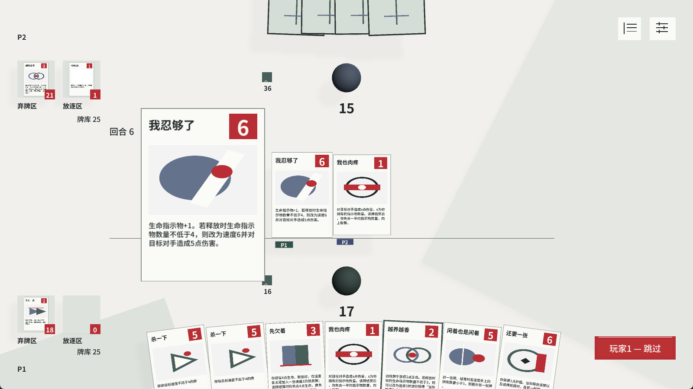
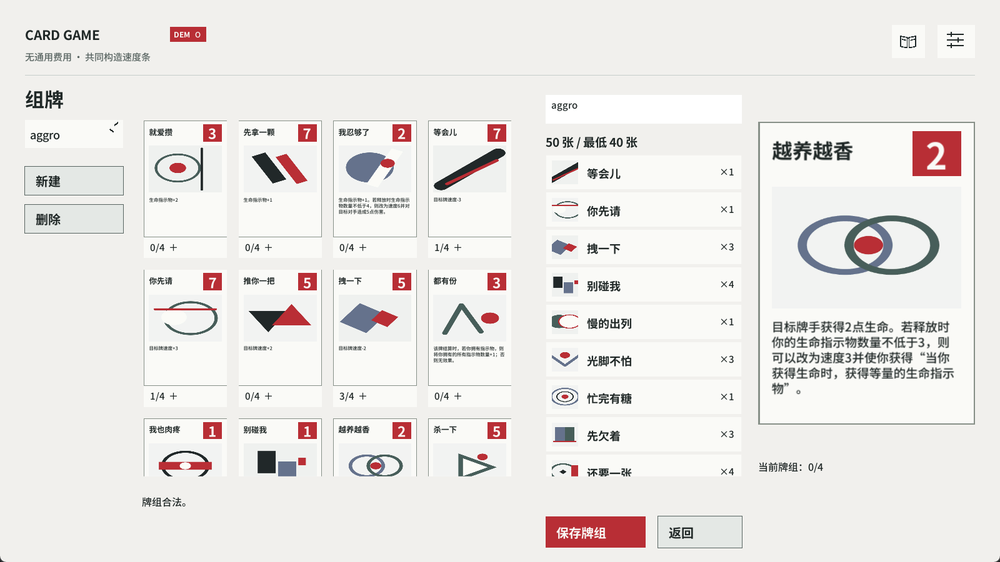

保留回应牌
前牌被移除，后牌造成伤害。
- 手牌 / 指示物
- 3 / 0
- 双方生命 A / B
- 10 / 7
积累、回应，再决定怎样兑现。
双方把牌加入共享速度条，回应会改变接下来的结算。我围绕这套规则设计资源、条件与卡牌组合，让出牌时机、手牌和后续机会共同参与选择。

我把生命指示物同时接到效果与速度：条件不足时，它帮助积累；释放时达到 4 枚，便变成速度 6 的 5 点伤害。前期动作因此也在准备下一次爆发。
结算时获得 1 枚生命指示物。

满足 4 枚门槛，结算时对对手造成 5 点伤害。

同局不同轮次的两次释放，均为结算前画面。实机局部可放大查看完整原图。
模式在释放时确定，门槛不消耗指示物。速度条按速度从高到低结算。
条件达成后，收益同时体现在伤害和先结算的机会。玩家需要比较：现在把它用来积累，还是等待足够资源再打出；对手也能从公开资源与速度条判断威胁。
速度 3，获得 2 枚生命指示物。
释放时达到 4 枚，转为快速伤害。
按现有全部指示物造成伤害，结算后失去一半，向上取整。
同一套资源既承担门槛，也承担兑现基础。使用资源的代价会影响之后能打开的选择。
已有规则把积累接到爆发，我继续尝试改变资源的取得方式：让后续回复转化为指示物，使回复牌也能参与资源构筑。

当前采用基础回复
达到门槛后，也可以继续选择基础模式。
生命指示物仍为 2 个。
这是在即时回复与未来成长之间增加选择。持续模式替换这一次回复；之后的回复可以继续积累指示物，再接回「我忍够了」等牌的门槛与兑现。规则之间因此形成构筑方向。
我用四张牌做规则推演：一张改速度的回应牌，既能救下前牌，也会改变手牌数，进而让另一张牌从伤害切换为回复。
双方生命均为 10。A 起手 5 张：「换张看看」「突然不乖」「你先请」与两张保留牌，生命指示物为 0；无其他持续效果，牌库可抽牌。A、B 依次完成以下出牌后，B 已让过，轮到 A 决定。
前牌被移除，后牌造成伤害。
前牌先结算，抽牌补回伤害条件。
前牌先结算，后牌因手牌不足转为回复。
展开各自的结算过程
规则推演 · 「你先请」速度 7，使「换张看看」速度从 3 变为 6，抢在「杀一下」之前结算；之后移除牌因目标已离开速度条而失效。本例按所列牌张效果推演。
三种结果各自保留不同东西：回应牌、新抽到的牌，或指示物与生命。改速度带来的收益，需要与消耗手牌、改变后续牌条件的影响一起衡量。
原型把规则分为释放、将要结算和结算等事件。「我忍够了」在释放时保存模式，结算时读取，让条件的时点在数据与实际效果中保持一致。
on_play: counters_life >= 4
→ store locked_t = 1
→ transform speed = 6
on_resolve: locked_t == 1
→ damage opponent 5
else
→ counter_add life 1把当时成立的条件保存下来，后续资源变化不会追溯改写已经确定的模式。
卡牌数据、条件和动作进入规则执行；推演案例用于比较不同选择的结果。
组牌、手牌、速度条与详情承接同一牌张，支持在对局中识别对象与读懂规则。
教学、组牌、本地人机与双人地址联机，整理为 Windows 试玩包。
从玩法系统，继续看创作工具